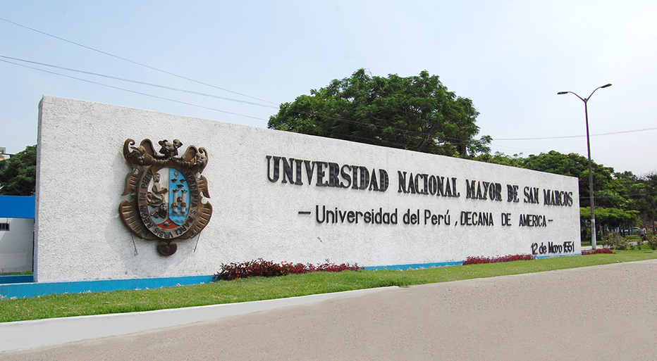

Ciclos Disponibles

San Marcos
Ciclo anual, semestral y repaso intensivo con enfoque en razonamiento y ciencias básicas.
UNI
Formación sólida en matemáticas, física y química, ideal para futuros ingenieros.
Agraria La Molina
Preparación especializada para carreras en ciencias biológicas, agrícolas y ambientales.